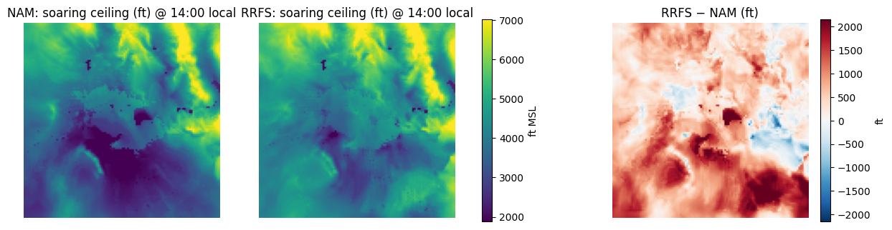
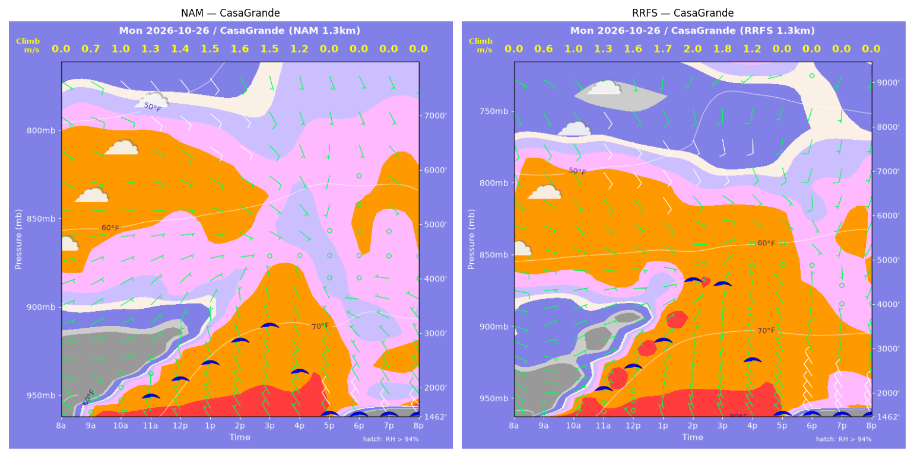
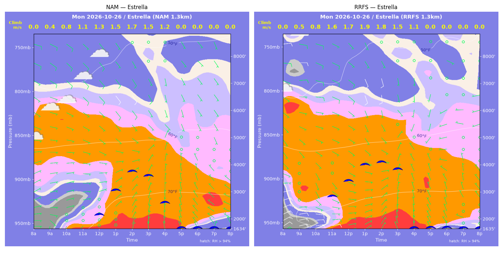
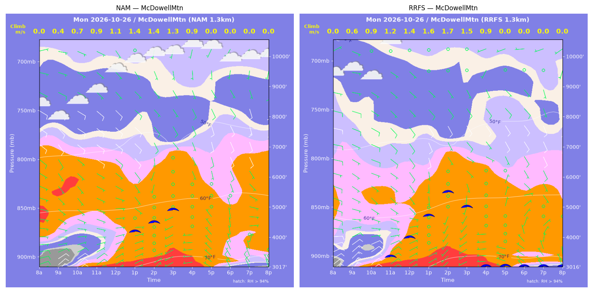
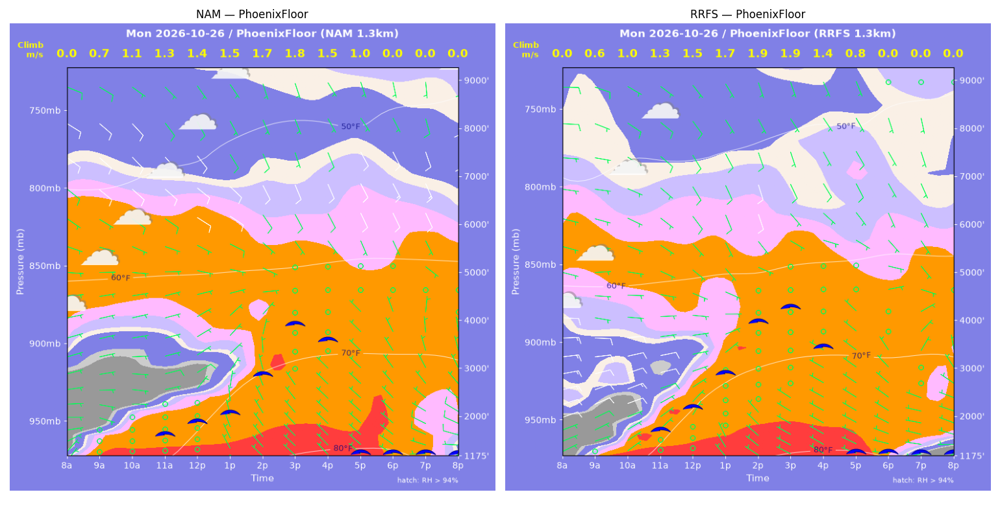
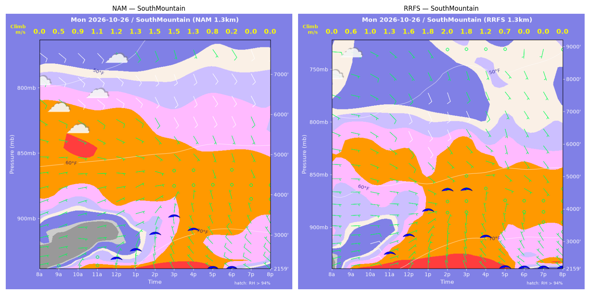
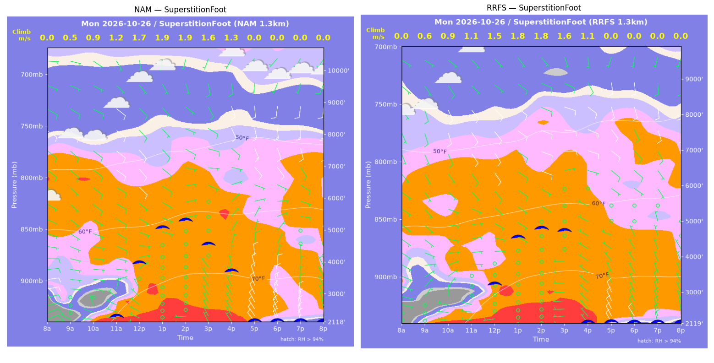
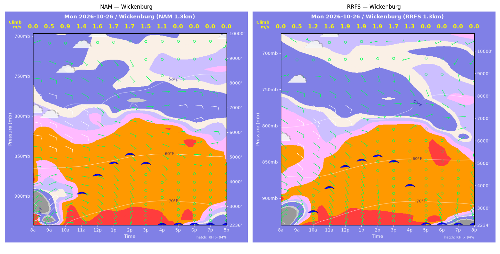

../runs/ab-phoenix-nam — model nam, cycle 2026-10-25 18z, dx 1.3333333740234374 km, 13 hours, grid 114×114../runs/ab-phoenix-rrfs — model rrfs, cycle 2026-10-25 18z, dx 1.3333333740234374 km, 13 hours, grid 114×114Grids identical; afternoon = 12:00–17:59 local (UTC-7). Δ = RRFS − NAM.
| Site | terrain ft | BL top (AGL) med|Δ| / bias (ft) | w* med|Δ| / bias (fpm) | Soaring ceiling med|Δ| / bias (ft) | BL wind speed med|Δ| / bias (kt) | BL wind dir med|Δ| / bias (deg) | 2 m temperature med|Δ| / bias (F) | Sfc LCL (AGL) med|Δ| / bias (ft) | Sensible heat flux med|Δ| / bias (W/m2) |
|---|---|---|---|---|---|---|---|---|---|
| PhoenixFloor | 1175 | 421 / +456 | 23 / +18 | 303 / +383 | 1 / -0 | 35 / +12 | 1 / +1 | 1491 / +1499 | 13 / +5 |
| SouthMountain | 2160 | 1249 / +1113 | 62 / +48 | 913 / +767 | 1 / +1 | 46 / +41 | 2 / +2 | 2081 / +2070 | 9 / -1 |
| SuperstitionFoot | 2119 | 646 / -554 | 28 / -24 | 525 / -530 | 2 / +1 | 14 / +3 | 0 / -1 | 1519 / +1546 | 16 / -14 |
| Estrella | 1635 | 601 / +601 | 20 / +24 | 613 / +290 | 2 / -0 | 38 / -6 | 0 / +1 | 1583 / +1602 | 20 / +11 |
| Wickenburg | 2236 | 250 / +851 | 32 / +31 | 328 / +521 | 1 / +0 | 15 / -32 | 0 / +0 | 1625 / +1608 | 37 / +34 |
| CasaGrande | 1462 | 1099 / +1255 | 33 / +31 | 561 / +741 | 2 / +2 | 45 / +57 | 1 / +1 | 1823 / +1882 | 9 / -8 |
| McDowellMtn | 3017 | 590 / +112 | 35 / +32 | 281 / +422 | 1 / +0 | 43 / -23 | 0 / +0 | 2180 / +2146 | 38 / +29 |
| Metric | n | median |Δ| | p90 |Δ| | bias |
|---|---|---|---|---|
| BL top (AGL) (ft) | 42 | 623 | 1759 | +548 |
| w* (fpm) | 42 | 28 | 68 | +23 |
| Soaring ceiling (ft) | 42 | 460 | 1290 | +371 |
| BL wind speed (kt) | 42 | 1 | 3 | +1 |
| BL wind dir (deg) | 42 | 34 | 117 | +7 |
| 2 m temperature (F) | 42 | 0 | 2 | +1 |
| Sfc LCL (AGL) (ft) | 42 | 1683 | 2241 | +1765 |
| Sensible heat flux (W/m2) | 42 | 13 | 43 | +8 |
diffmap_tol.png| local | BL top NAM/RRFS ft | w* NAM/RRFS fpm | ceiling NAM/RRFS ft | BL wind NAM/RRFS | T2 NAM/RRFS F | HFX NAM/RRFS |
|---|---|---|---|---|---|---|
| 08:00 | 0 / 0 | 0 / 0 | 1175 / 1175 | 3kt@036 / 1kt@061 | 60 / 60 | 0 / 0 |
| 09:00 | 789 / 481 | 144 / 116 | 1175 / 1175 | 3kt@105 / 7kt@065 | 65 / 65 | 58 / 50 |
| 10:00 | 1222 / 966 | 208 / 189 | 1175 / 1175 | 6kt@097 / 11kt@071 | 68 / 69 | 113 / 108 |
| 11:00 | 1428 / 1555 | 247 / 252 | 1680 / 1759 | 5kt@078 / 12kt@076 | 71 / 73 | 164 / 160 |
| 12:00 | 1655 / 2026 | 273 / 295 | 1917 / 2192 | 8kt@057 / 7kt@080 | 74 / 77 | 192 / 198 |
| 13:00 | 1853 / 2924 | 287 / 340 | 2071 / 2863 | 6kt@044 / 5kt@090 | 78 / 80 | 200 / 212 |
| 14:00 | 2966 / 4361 | 327 / 382 | 2830 / 3897 | 4kt@043 / 6kt@140 | 81 / 81 | 185 / 202 |
| 15:00 | 4550 / 4925 | 348 / 367 | 3846 / 4178 | 6kt@143 / 7kt@138 | 82 / 82 | 146 / 160 |
| 16:00 | 4612 / 4603 | 297 / 281 | 3508 / 3344 | 4kt@144 / 6kt@133 | 82 / 82 | 90 / 77 |
| 17:00 | 4119 / 3652 | 191 / 167 | 1175 / 1175 | 7kt@156 / 2kt@082 | 82 / 82 | 27 / 20 |
| 18:00 | 2735 / 1186 | 0 / 0 | 1175 / 1175 | 4kt@338 / 5kt@304 | 81 / 80 | -1 / -2 |
| 19:00 | 910 / 346 | 0 / 0 | 1175 / 1175 | 7kt@302 / 6kt@282 | 80 / 78 | -2 / -5 |
| 20:00 | 569 / 151 | 0 / 0 | 1175 / 1175 | 8kt@295 / 6kt@272 | 78 / 75 | -2 / -3 |
| local | BL top NAM/RRFS ft | w* NAM/RRFS fpm | ceiling NAM/RRFS ft | BL wind NAM/RRFS | T2 NAM/RRFS F | HFX NAM/RRFS |
|---|---|---|---|---|---|---|
| 08:00 | 0 / 0 | 0 / 0 | 2160 / 2159 | 4kt@075 / 6kt@064 | 60 / 63 | 0 / 0 |
| 09:00 | 347 / 527 | 102 / 109 | 2160 / 2159 | 3kt@096 / 7kt@076 | 63 / 67 | 46 / 38 |
| 10:00 | 626 / 898 | 181 / 202 | 2160 / 2159 | 4kt@096 / 10kt@072 | 64 / 69 | 144 / 142 |
| 11:00 | 922 / 1348 | 222 / 255 | 2160 / 2685 | 5kt@100 / 5kt@086 | 67 / 71 | 182 / 191 |
| 12:00 | 955 / 1965 | 242 / 310 | 2472 / 3204 | 5kt@069 / 5kt@100 | 70 / 73 | 230 / 237 |
| 13:00 | 1172 / 2952 | 265 / 364 | 2657 / 3948 | 4kt@049 / 5kt@133 | 72 / 75 | 247 / 255 |
| 14:00 | 1770 / 3794 | 294 / 385 | 3043 / 4539 | 3kt@046 / 7kt@149 | 74 / 76 | 223 / 236 |
| 15:00 | 2477 / 3966 | 303 / 359 | 3446 / 4538 | 2kt@092 / 5kt@142 | 75 / 77 | 176 / 182 |
| 16:00 | 2369 / 2701 | 258 / 246 | 3108 / 3100 | 2kt@104 / 3kt@063 | 76 / 77 | 114 / 86 |
| 17:00 | 1179 / 1224 | 149 / 138 | 2160 / 2159 | 6kt@335 / 5kt@354 | 76 / 76 | 44 / 34 |
| 18:00 | 252 / 472 | 48 / 0 | 2160 / 2159 | 7kt@295 / 5kt@307 | 75 / 74 | 7 / -1 |
| 19:00 | 609 / 448 | 0 / 0 | 2160 / 2159 | 7kt@311 / 5kt@304 | 74 / 73 | -3 / -2 |
| 20:00 | 476 / 454 | 0 / 0 | 2160 / 2159 | 7kt@308 / 5kt@308 | 73 / 71 | -3 / -2 |
| local | BL top NAM/RRFS ft | w* NAM/RRFS fpm | ceiling NAM/RRFS ft | BL wind NAM/RRFS | T2 NAM/RRFS F | HFX NAM/RRFS |
|---|---|---|---|---|---|---|
| 08:00 | 0 / 0 | 0 / 0 | 2119 / 2119 | 8kt@065 / 2kt@043 | 58 / 64 | 0 / 0 |
| 09:00 | 261 / 470 | 105 / 118 | 2119 / 2119 | 5kt@293 / 2kt@221 | 69 / 66 | 68 / 53 |
| 10:00 | 684 / 740 | 178 / 179 | 2119 / 2119 | 2kt@345 / 3kt@005 | 69 / 70 | 126 / 118 |
| 11:00 | 1092 / 1044 | 229 / 220 | 2366 / 2119 | 3kt@033 / 1kt@048 | 73 / 73 | 171 / 157 |
| 12:00 | 3224 / 2276 | 342 / 292 | 3988 / 3247 | 7kt@119 / 6kt@105 | 77 / 76 | 194 / 169 |
| 13:00 | 4726 / 4064 | 378 / 350 | 5053 / 4516 | 8kt@126 / 9kt@122 | 79 / 78 | 180 / 164 |
| 14:00 | 5112 / 4498 | 373 / 346 | 5264 / 4752 | 7kt@093 / 10kt@107 | 80 / 79 | 159 / 144 |
| 15:00 | 4371 / 4648 | 320 / 321 | 4514 / 4675 | 5kt@102 / 10kt@095 | 80 / 80 | 118 / 111 |
| 16:00 | 4145 / 3516 | 252 / 210 | 3669 / 2119 | 5kt@057 / 3kt@112 | 79 / 79 | 60 / 41 |
| 17:00 | 2109 / 1361 | 0 / 0 | 2119 / 2119 | 9kt@358 / 7kt@333 | 77 / 76 | -6 / -9 |
| 18:00 | 1219 / 678 | 0 / 0 | 2119 / 2119 | 12kt@357 / 7kt@334 | 73 / 72 | -14 / -8 |
| 19:00 | 816 / 763 | 0 / 0 | 2119 / 2119 | 9kt@004 / 8kt@350 | 72 / 71 | -19 / -7 |
| 20:00 | 361 / 476 | 0 / 0 | 2119 / 2119 | 5kt@000 / 7kt@356 | 70 / 70 | -15 / -13 |
| local | BL top NAM/RRFS ft | w* NAM/RRFS fpm | ceiling NAM/RRFS ft | BL wind NAM/RRFS | T2 NAM/RRFS F | HFX NAM/RRFS |
|---|---|---|---|---|---|---|
| 08:00 | 0 / 0 | 0 / 0 | 1635 / 1635 | 4kt@086 / 10kt@057 | 57 / 64 | 0 / 0 |
| 09:00 | 227 / 256 | 84 / 106 | 1635 / 1635 | 4kt@145 / 18kt@077 | 66 / 70 | 40 / 72 |
| 10:00 | 677 / 470 | 159 / 163 | 1635 / 1635 | 3kt@090 / 12kt@083 | 67 / 72 | 91 / 142 |
| 11:00 | 1099 / 2370 | 214 / 305 | 1635 / 2874 | 4kt@087 / 3kt@134 | 71 / 75 | 136 / 186 |
| 12:00 | 1535 / 3098 | 252 / 340 | 2209 / 3422 | 5kt@081 / 4kt@121 | 74 / 77 | 160 / 197 |
| 13:00 | 2752 / 3860 | 304 / 366 | 3067 / 3984 | 4kt@101 / 5kt@157 | 77 / 78 | 158 / 199 |
| 14:00 | 3678 / 4035 | 336 / 357 | 3737 / 4047 | 5kt@138 / 7kt@173 | 78 / 78 | 160 / 175 |
| 15:00 | 3725 / 4342 | 302 / 291 | 3556 / 3783 | 5kt@139 / 4kt@147 | 79 / 79 | 114 / 89 |
| 16:00 | 3627 / 3043 | 232 / 213 | 2562 / 1635 | 4kt@138 / 2kt@329 | 79 / 79 | 53 / 49 |
| 17:00 | 1355 / 1902 | 0 / 0 | 1635 / 1635 | 5kt@349 / 4kt@345 | 77 / 77 | -1 / -1 |
| 18:00 | 324 / 84 | 0 / 0 | 1635 / 1635 | 5kt@318 / 3kt@351 | 72 / 72 | -2 / -1 |
| 19:00 | 85 / 84 | 0 / 0 | 1635 / 1635 | 2kt@008 / 2kt@052 | 71 / 71 | -1 / -1 |
| 20:00 | 264 / 84 | 0 / 0 | 1635 / 1635 | 3kt@317 / 2kt@093 | 70 / 70 | -1 / -1 |
| local | BL top NAM/RRFS ft | w* NAM/RRFS fpm | ceiling NAM/RRFS ft | BL wind NAM/RRFS | T2 NAM/RRFS F | HFX NAM/RRFS |
|---|---|---|---|---|---|---|
| 08:00 | 0 / 0 | 0 / 0 | 2236 / 2235 | 9kt@029 / 3kt@326 | 56 / 56 | 0 / 0 |
| 09:00 | 340 / 432 | 91 / 99 | 2236 / 2235 | 8kt@036 / 5kt@041 | 65 / 67 | 32 / 34 |
| 10:00 | 1407 / 2301 | 182 / 235 | 2236 / 2878 | 4kt@107 / 7kt@121 | 72 / 72 | 62 / 86 |
| 11:00 | 2993 / 3170 | 272 / 313 | 3572 / 3933 | 8kt@100 / 7kt@122 | 74 / 74 | 100 / 148 |
| 12:00 | 3716 / 4225 | 319 / 374 | 4270 / 4839 | 8kt@101 / 7kt@115 | 75 / 75 | 131 / 191 |
| 13:00 | 4333 / 4570 | 341 / 382 | 4740 / 5090 | 7kt@103 / 7kt@105 | 76 / 76 | 136 / 189 |
| 14:00 | 4920 / 4936 | 339 / 373 | 5067 / 5271 | 6kt@101 / 6kt@083 | 77 / 77 | 118 / 162 |
| 15:00 | 4853 / 4945 | 297 / 328 | 4697 / 5004 | 6kt@091 / 7kt@075 | 77 / 77 | 80 / 110 |
| 16:00 | 4562 / 4825 | 219 / 247 | 2236 / 3937 | 7kt@080 / 8kt@067 | 77 / 77 | 33 / 48 |
| 17:00 | 484 / 4474 | 0 / 0 | 2236 / 2235 | 2kt@189 / 1kt@029 | 75 / 75 | -1 / -0 |
| 18:00 | 84 / 84 | 0 / 0 | 2236 / 2235 | 2kt@258 / 4kt@341 | 71 / 70 | -1 / -2 |
| 19:00 | 84 / 84 | 0 / 0 | 2236 / 2235 | 1kt@104 / 6kt@327 | 70 / 67 | -0 / -4 |
| 20:00 | 84 / 290 | 0 / 0 | 2236 / 2235 | 3kt@060 / 6kt@329 | 67 / 65 | -1 / -7 |
| local | BL top NAM/RRFS ft | w* NAM/RRFS fpm | ceiling NAM/RRFS ft | BL wind NAM/RRFS | T2 NAM/RRFS F | HFX NAM/RRFS |
|---|---|---|---|---|---|---|
| 08:00 | 0 / 0 | 0 / 0 | 1462 / 1462 | 2kt@128 / 1kt@100 | 57 / 56 | 0 / 0 |
| 09:00 | 565 / 341 | 139 / 118 | 1462 / 1462 | 4kt@142 / 2kt@086 | 63 / 63 | 73 / 73 |
| 10:00 | 948 / 898 | 202 / 200 | 1462 / 1462 | 3kt@074 / 5kt@067 | 67 / 68 | 134 / 138 |
| 11:00 | 1237 / 1582 | 247 / 264 | 1901 / 2130 | 3kt@048 / 5kt@062 | 71 / 73 | 189 / 181 |
| 12:00 | 1547 / 2156 | 280 / 308 | 2186 / 2598 | 4kt@024 / 6kt@062 | 75 / 76 | 221 / 211 |
| 13:00 | 1912 / 2912 | 302 / 340 | 2450 / 3145 | 4kt@025 / 7kt@076 | 78 / 79 | 225 / 213 |
| 14:00 | 2515 / 4768 | 317 / 388 | 2828 / 4465 | 3kt@021 / 8kt@139 | 80 / 81 | 198 / 193 |
| 15:00 | 3114 / 4929 | 304 / 349 | 3084 / 4361 | 4kt@123 / 6kt@127 | 81 / 82 | 142 / 135 |
| 16:00 | 3004 / 4202 | 232 / 236 | 2234 / 2661 | 2kt@351 / 3kt@120 | 81 / 82 | 65 / 49 |
| 17:00 | 1774 / 2431 | 0 / 0 | 1462 / 1462 | 5kt@331 / 4kt@328 | 78 / 78 | -6 / -5 |
| 18:00 | 558 / 705 | 0 / 0 | 1462 / 1462 | 8kt@330 / 12kt@323 | 72 / 72 | -8 / -15 |
| 19:00 | 354 / 461 | 0 / 0 | 1462 / 1462 | 9kt@323 / 11kt@325 | 70 / 70 | -10 / -16 |
| 20:00 | 310 / 311 | 0 / 0 | 1462 / 1462 | 9kt@319 / 9kt@331 | 69 / 68 | -11 / -16 |
| local | BL top NAM/RRFS ft | w* NAM/RRFS fpm | ceiling NAM/RRFS ft | BL wind NAM/RRFS | T2 NAM/RRFS F | HFX NAM/RRFS |
|---|---|---|---|---|---|---|
| 08:00 | 0 / 0 | 0 / 0 | 3017 / 3017 | 7kt@066 / 11kt@042 | 58 / 61 | 0 / 0 |
| 09:00 | 230 / 431 | 72 / 109 | 3017 / 3017 | 9kt@042 / 14kt@041 | 63 / 65 | 21 / 45 |
| 10:00 | 519 / 739 | 133 / 173 | 3017 / 3017 | 8kt@059 / 8kt@066 | 66 / 66 | 63 / 105 |
| 11:00 | 892 / 1430 | 180 / 235 | 3017 / 3421 | 5kt@067 / 6kt@093 | 68 / 68 | 93 / 138 |
| 12:00 | 1513 / 2182 | 219 / 277 | 3017 / 4020 | 4kt@084 / 5kt@142 | 70 / 70 | 100 / 148 |
| 13:00 | 2776 / 3190 | 268 / 310 | 4219 / 4713 | 7kt@140 / 8kt@173 | 72 / 72 | 100 / 143 |
| 14:00 | 3365 / 4384 | 270 / 327 | 4501 / 5467 | 5kt@183 / 7kt@165 | 73 / 74 | 84 / 122 |
| 15:00 | 4442 / 3932 | 265 / 293 | 4907 / 4975 | 3kt@173 / 3kt@129 | 74 / 74 | 59 / 97 |
| 16:00 | 2827 / 2810 | 175 / 179 | 3017 / 3017 | 1kt@197 / 1kt@071 | 73 / 73 | 25 / 30 |
| 17:00 | 1196 / 296 | 0 / 0 | 3017 / 3017 | 5kt@323 / 4kt@281 | 72 / 72 | -2 / -1 |
| 18:00 | 713 / 501 | 0 / 0 | 3017 / 3017 | 7kt@347 / 4kt@309 | 68 / 68 | -6 / -3 |
| 19:00 | 372 / 312 | 0 / 0 | 3017 / 3017 | 5kt@344 / 4kt@330 | 67 / 67 | -7 / -3 |
| 20:00 | 270 / 298 | 0 / 0 | 3017 / 3017 | 6kt@335 / 4kt@357 | 66 / 66 | -6 / -4 |
montage_PhoenixFloor.pngmontage_SouthMountain.pngmontage_SuperstitionFoot.pngmontage_Estrella.pngmontage_Wickenburg.pngmontage_CasaGrande.pngmontage_McDowellMtn.png